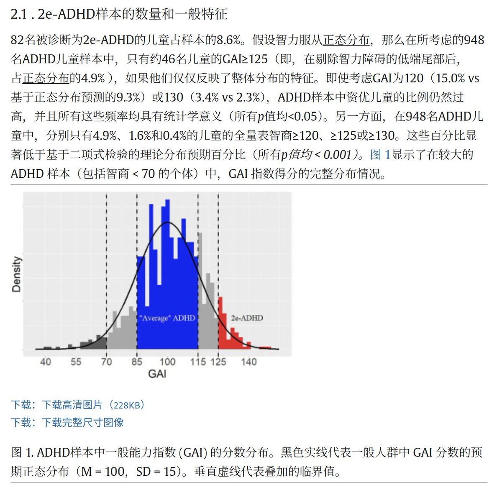

時璃風医詩🌈🏳️🌈
@hagishigure
一个简单的理论：如果adhd并不比NT优秀那么就不会需要用任何篇幅去维持正常性帝国，任何试图维持adhd并不比NT优秀的结论和研究都是在证明adhd就是人类进化的新方向。

SUR
@386Nsg47079
GAI是一种排除了工作记忆和处理速度测试智力指标。
尽管ADHD儿童当中高智商的比例确实会稍微多一些，但在948名ADHD儿童样本中，也仅有82名儿童的GAI≥125。
如果采用全量表智商（包含工作记忆和处理速度测试），仅有1.6%的ADHD儿童智商≥125，显著低于正态分布预期。
所以，说ADHD是天才病言过其实. https://t.co/EGuj2fbZpg